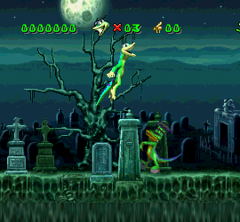
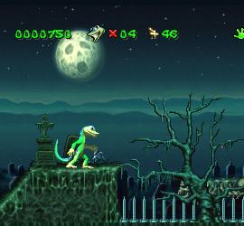

GEX (SERIES)
Playable Animal(s): Gecko
Features: Platforming, Dimension-Hopping, Humour, References, etc
Platform: 3DO, PS1, PC, N64, SS, GBCGex is a platform game series that details the adventures of an anthropomorphic gecko of the same name as he is thrust into the world of television.